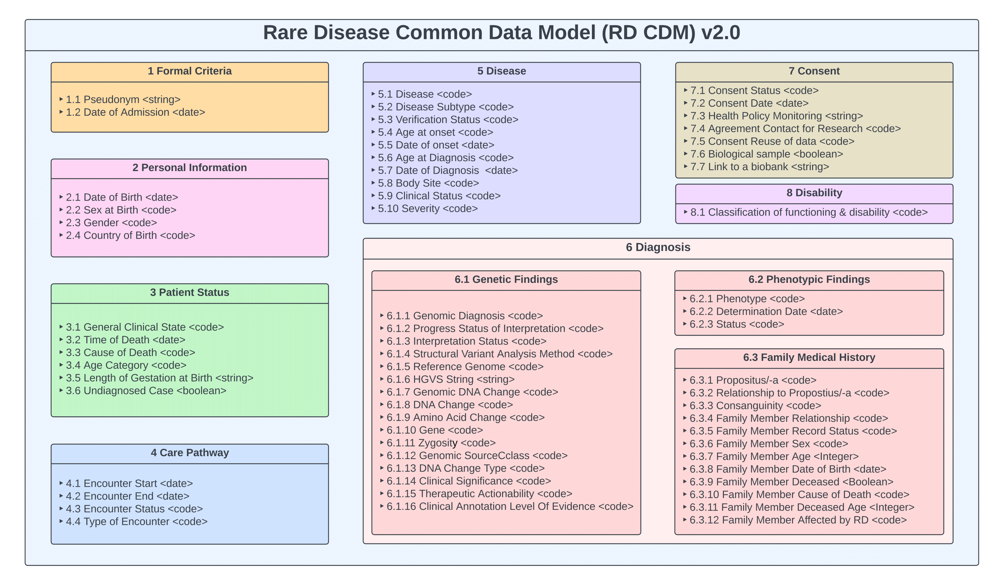

1.5. Rare Disease Common Data Model v2.0
The Rare Diseases Common Data Model (RD CDM) v2.0 was developed to address the complexity and variability inherent in rare diseases, which number over 6,000 and often require unique approaches to research and clinical care. This model is based on the Common Data Elements (CDEs) from the European Rare Disease Registry Infrastructure (ERDRI-CDS), providing a standardized structure for data capture and analysis. We expanded on these elements to meet the needs of international interoperability standards, aligning with both HL7 FHIR and the GA4GH Phenopacket Schema. The development of this model involved overcoming challenges such as the lack of standardized terms for disease characteristics and the need to represent highly variable clinical data across different rare diseases.
Note
The RD CDM v2.0 is not a balloted version, but it can serve as a template for future standardization efforts in rare disease research.
1.5.1. Key Success Factors of a Rare Disease Common Data Model
Developing an RD CDM also requires balancing between complexity and usability. A successful model must be comprehensive enough to capture the nuances of each rare disease, yet simple enough to be adopted across various healthcare systems. One key difficulty is finding a common denominator for the unique clinical requirements of diverse rare diseases while maintaining flexibility for future expansions. Additionally, ensuring that the data can be seamlessly integrated into existing healthcare systems without exceeding the avaliable resources is also essential. Addressing these complexities, the RD CDM v2.0 provides a framework that enhances the consistency of rare disease data, enabling better comparative analysis across research institutions and healthcare settings. While the RD CDM v2.0 is not a balloted version, it can serve as a template for future standardization efforts in rare disease research.
Key success factors for the RD CDM include its ability to support secondary uses of data, such as transferring data to central registries or enabling federated analyses. By adhering to international interoperability standards, the model ensures that data captured locally can be reused in broader contexts, such as global research initiatives. This not only improves the efficiency of rare disease research but also helps preserve the unique aspects of each condition. The RD CDM’s flexibility allows it to evolve with the growing needs of the rare disease community.
{kind=link}